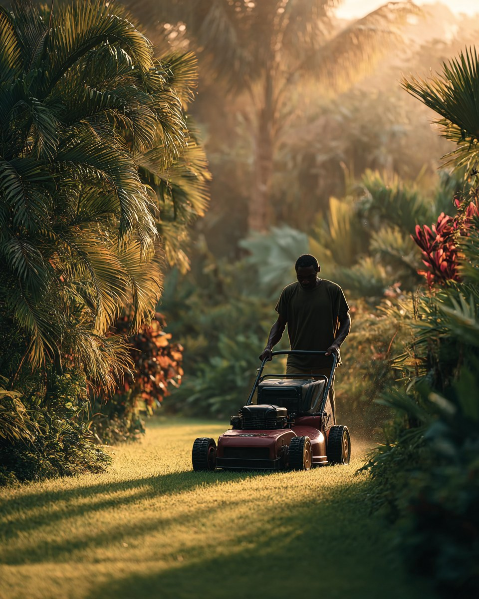

Outillage, entretien, arrosage : l'autre univers de Jardiland
Tondeuses, débroussailleuses, engrais, terreaux, systèmes d'arrosage : tout pour entretenir efficacement votre jardin tropical.
Trois rayons pour entretenir votre jardin
De l'outillage à l'arrosage, en passant par les engrais et les traitements : tout est pensé pour le climat antillais.

Les bons outils font les bons jardiniers
Sous nos tropiques, le matériel doit encaisser l'humidité, les alizés et le sel. On ne choisit pas son outil au hasard.
Du conseil avant l'achat
Tondeuse à essence ou électrique ? Engrais minéral ou organique ? Nos équipes vous orientent en fonction de votre terrain et de vos besoins réels.
Le service après-vente près de chez vous
Pas besoin d'envoyer votre matériel sur le continent : nous nous occupons de la mise en route et de l'entretien sur place.
Des marques pros sélectionnées
Kärcher, Hozelock, Ribimex et bien d'autres : du matériel qui dure, en cohérence avec un usage tropical exigeant.
Outillage jardin Guadeloupe : vos questions
Les réponses pratiques pour bien choisir vos outils et engrais sous climat tropical.
Quel outillage jardin choisir en Guadeloupe ?
L'outillage jardin Guadeloupe doit composer avec une végétation rapide et dense. Pour un terrain de moins de 500 m² avec végétation maîtrisée, l'électrique sur batterie (18V minimum) est aujourd'hui pertinent. Au-delà, ou pour de l'alpinia et du bambou, le thermique reste la valeur sûre.
Comment entretenir son jardin pendant le carême ?
L'entretien jardin Guadeloupe en saison sèche repose sur trois leviers : pailler généreusement pour conserver l'humidité, arroser tôt le matin ou en fin de journée, et limiter la taille pour ne pas affaiblir les plants. Récupérer l'eau de pluie en hivernage permet aussi de tenir le coup.
Quel engrais utiliser pour un sol tropical ?
Les pluies tropicales lessivent vite les sols. Privilégiez des engrais organiques à libération lente (corne broyée, sang séché, guano) en début d'hivernage, et complétez avec du compost mûr. Mieux vaut fertiliser peu mais souvent que beaucoup en une fois.
Où acheter une débroussailleuse en Guadeloupe ?
Nos rayons outils de Baie-Mahault et Les Abymes proposent des débroussailleuses thermiques, électriques et à batterie de toutes puissances. Pour la végétation dense (alpinia, bambous, lianes), nos conseillers orientent vers les modèles thermiques avec lame métallique.
Où trouver un magasin de jardinage en Guadeloupe ?
Jardiland est le magasin jardinage Guadeloupe de référence avec deux points de vente : Baie-Mahault (Centre commercial Jardi-Village, Jabrun) et Les Abymes (Rond-point de Providence). Tous les rayons outillage, engrais et arrosage y sont disponibles, avec le conseil de nos 25 experts.
Un projet d'entretien ? Parlons-en.
Passez en magasin avec votre liste de besoins : nos conseillers vous orientent vers le bon matériel, sans sur-équipement inutile.
Voir nos magasins